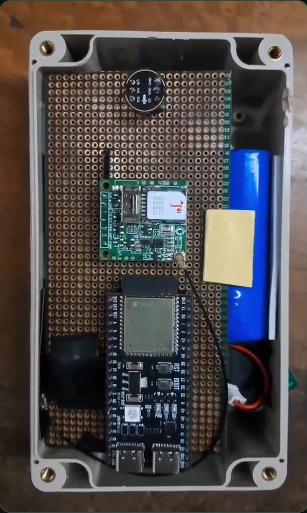
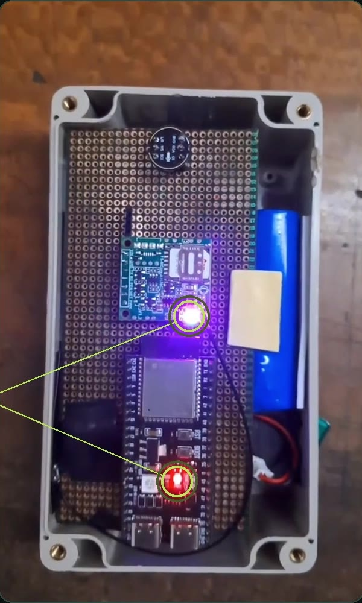
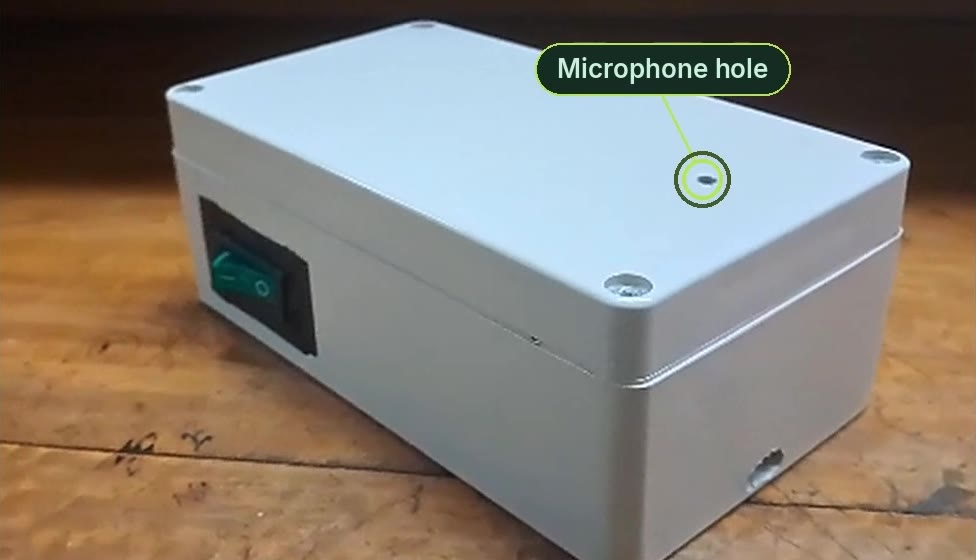
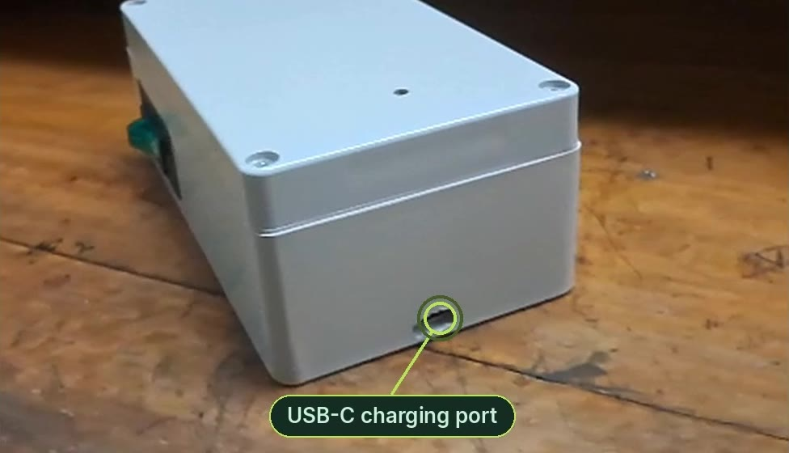

AvianAcoustics
Off-grid bird-call monitoring at the edge.
A solar-powered recorder that listens to the forest all day, picks out the bird calls on the device, sends only those over 4G, and names every species with BirdNET.
Birds tell us how healthy a forest is
Ecologists survey forests by listening. But a recorder that keeps everything drowns in audio, and someone still has to hike in, collect the cards and listen through it all.
Recording everything, 24/7, would mean about 83 GB of audio a month per recorder. The node listens to all of it but sends only the regions that contain calls. The other 75 % never leaves the box.
25 % in the demo recording (51 s of 3 min 21 s). The share depends on how busy the soundscape is.
From a bird call to a species, automatically
The node does the listening and filtering. The server does the identifying. Only short snippets travel between them.
Listen
MEMS mic sampled at 16 kHz in back-to-back 10 s windows
Find calls
Energy-based detector marks regions of interest
Queue
Snippets wait in a PSRAM ring buffer until sent
Send
WAV + metadata posted to the REST API
Identify
BirdNET 2.4 with a location-and-week species filter
Explore
Live feed, charts and playable snippets
On the node ESP32-S3 firmware
C++ / PlatformIO. Bit-exact with the Python reference used for evaluation.
- Capture. INMP441 over I²S, a 20 Hz DC-blocker, then double-buffered 10 s windows handed from a capture task to a processing task.
- High-pass for detection. A 4th-order 1 kHz filter removes wind and rumble on a copy. The uploaded audio stays unfiltered.
- Short-time energy. 25 ms frames every 10 ms, smoothed over 15 frames.
- Adaptive threshold. Regions start and end at
2 × medianof that window, merge across gaps under 0.5 s, and are kept only if the peak reaches4 × medianand an absolute dBFS floor. - Trim & pad. Drop regions shorter than 0.5 s, pad 0.25 s either side, convert to 16-bit WAV.
- Store & forward. A 4 MB PSRAM ring (about 131 s of snippets) feeds the SIMCom A7670 modem. Retries back off from 5 s to 2 min.
On the server FastAPI + BirdNET
Async Python, PostgreSQL, Alembic migrations, React dashboard.
- Upload.
POST /api/v1/recordingswith a device key. Validates the WAV, dedupes by checksum, stores the snippet as pending. - Pad to 3 s. BirdNET listens in 3-second windows, so shorter snippets are centre-padded with silence.
- Location filter. BirdNET's geo model lists the species expected at the device's coordinates, district or province for that week of the year.
- Classify. BirdNET 2.4 runs in a background thread, keeping up to 5 species per window above 0.25 confidence.
- Store detections. Each species, confidence and time offset is saved and the recording is marked completed.
- Serve. REST endpoints power the dashboard's live feed, per-device stats and daily activity charts.
Play with the on-device detector
This runs the firmware's detection algorithm in your browser, on a synthetic 10-second soundscape: forest hiss, gusts of wind and a handful of birds. Change the settings and hear what the node would send.
Real hardware, real detections
Clips from the project reel: the node hearing a call and the dashboard naming the bird, uploading a recording by hand, and setting the node up.
A Common Myna call is played near the node. It detects the call, sends a 2.4 s snippet over 4G, and the dashboard shows “Common Myna” about 25 s after the call.
A dashboard for every call the forest makes
A React web app on top of the API, built for researchers who want answers, not audio files.
Live detection feed
New species appear as snippets are processed, newest first, refreshing on their own.
Playable evidence
Every detection keeps its snippet. Press play and hear exactly what BirdNET heard.
Species activity
Top species and daily activity charts per device and across the network.
Device health
Last upload, recordings, detections and the region each node covers.
Analyse any recording
Upload a WAV or MP3 from anywhere and get every region identified.
See the detection
Waveform, short-time energy and the regions sent to BirdNET, side by side.
Location-aware
Pick a Sri Lankan district or province so only species that occur there count.
Accounts & sharing
Personal devices, shared devices, analysis history and an admin view.
Illustrative feed in the dashboard's style.
A sealed box that runs on sunlight
Off-the-shelf modules on a hand-wired board inside a weatherproof enclosure. Everything you need is on the outside: a power switch, a microphone hole and a USB-C port.


INMP441 mic A7670 4G modem ESP32-S3 18650 cell ⏻ Tap to power on

- MCU
- ESP32-S3, dual core, PSRAM
- Microphone
- INMP441 I²S MEMS, 16 kHz mono
- Uplink
- SIMCom A7670C 4G LTE (FS-MCore), HTTP over the modem's TCP stack
- Power
- 18650 Li-ion, solar panel or USB-C charging
- Edge DSP
- 1 kHz high-pass · 25/10 ms short-time energy · 2× median extent · 4× peak gate
- Queue
- 4 MB PSRAM ring, 256 entries, 5 s → 2 min retry back-off
- Backend
- FastAPI · async SQLAlchemy · PostgreSQL · Alembic, on an Azure VM
- Classifier
- BirdNET 2.4 (TensorFlow), ≥ 0.25 confidence, top 5
- Geo filter
- BirdNET geo model · 25 Sri Lankan districts · per week
- Frontend
- React 19 · Vite · Recharts
Made for places nobody can listen all day
Biodiversity surveys
Continuous species presence data instead of one-morning point counts.
Endemic species
Keep watch for Sri Lanka's endemics, like the Sri Lanka Blue-Magpie.
Restoration tracking
See birds return as a replanted forest matures, month by month.
Research
Timestamped, located detections with the audio kept as evidence.
Remote sites
Anywhere with a 4G signal and some sun. No Wi-Fi, no power line.
Education & citizen science
Share a device with a class or a community and explore the results together.
Explore the live dashboard
See what the node has heard, or upload a recording of your own.